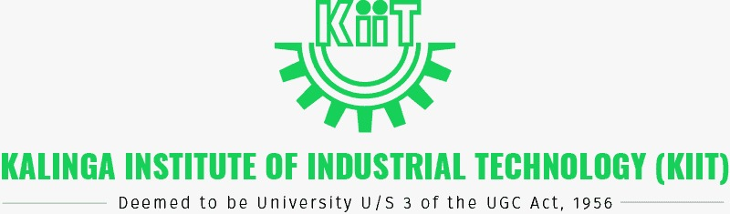

|  | |
|
|
KIIT is a private academic institution dedicated to providing educational opportunities for the intellectual, social, and professional development of a diverse student population. To achieve this purpose, the institution offers focused and balanced curricula at Undergraduate, Master’s and Doctoral levels. A broad-based core curriculum is offered, promoting critical thinking, effective verbal and written communication, and skills for life-long learning. KIIT’S approach to higher education and the resulting varied academic experiences provide students with the intellectual acumen and pragmatic approach necessary to create the foundation for personal and professional fulfillment. |
| Address KIIT Road, Patia, Bhubaneswar, Odisha 751024 | |